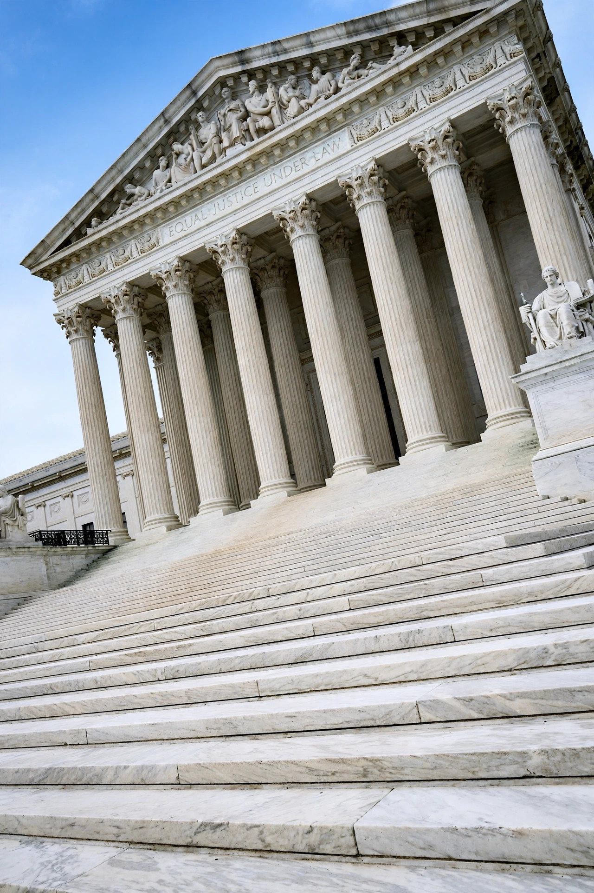

| Citation | 462 U.S. 213 (1983) |
|---|---|
| Decided | 8 June 1983 |
| Full name | Illinois v. Lance Gates, et ux. |
| Author | William Rehnquist |
| Holding | Probable cause based on informant tips is evaluated under the totality of the circumstances; the Aguilar–Spinelli two-prong test is abandoned as a rigid requirement. |
Illinois v. Gates, 462 U.S. 213 (1983), is a landmark United States Supreme Court case on the Fourth Amendment standard of probable cause. The Court replaced the rigid "two-pronged test" of Aguilar v. Texas (1964) and Spinelli v. United States (1969) with a flexible totality-of-the-circumstances approach to evaluating whether an informant's tip justifies issuing a search warrant.
In May 1978, police in Bloomingdale, Illinois received an anonymous handwritten letter alleging that Lance and Susan Gates regularly travelled to Florida to buy marijuana and other drugs and bring them back to Illinois, and describing in detail an imminent trip: Sue would drive down, Lance would fly, and they would return together with a trunk-load of drugs. Detectives corroborated much of the letter's innocent detail — Gates flew to Florida, stayed briefly at a motel with a woman, and drove north — and a judge issued a warrant to search the Gates home and car. The search uncovered marijuana, weapons and other contraband. The Illinois courts suppressed the evidence, holding that the anonymous letter, under the Aguilar–Spinelli test, could not establish probable cause.
Writing for a six-justice majority, Justice William Rehnquist held that probable cause is a "practical, nontechnical conception" turning on probabilities in particular factual contexts. Under the totality of the circumstances, an informant's veracity, reliability and basis of knowledge remain "highly relevant", but they are no longer separate, independent requirements; a deficiency in one may be compensated by strength in another or by other indicia of reliability. Because police had substantially corroborated the letter's predictions of future behaviour, the warrant was supported by probable cause. The Court also noted that magistrates' probable-cause determinations are entitled to deference, since the exclusionary rule's deterrent purpose is served by encouraging officers to seek warrants.
Gates remains the governing framework for assessing probable cause based on hearsay and tips, and its totality-of-the-circumstances approach has been extended to other contexts, including the assessment of reasonable suspicion in Alabama v. White (1990). In a related development the following term, the Court in United States v. Leon (1984) created the good-faith exception to the exclusionary rule for officers relying on defective warrants.
From Wikipedia, the free encyclopedia.